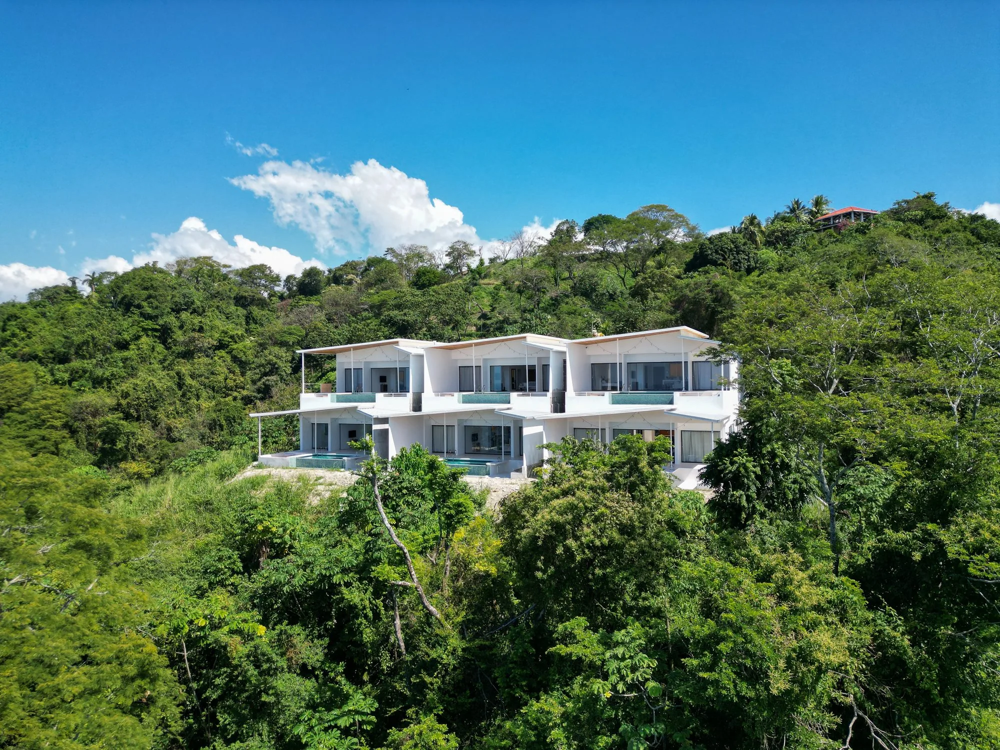

The real question is not which hotel. It is which stretch of the coast, and whether you will have a vehicle. Santa Teresa runs along a single eleven-kilometre road, and the area you pick decides the rest of your week: what you hear at night, what you can reach on foot, and how many times a day you get behind the wheel. Here is how to choose, with the constraints stated plainly.
If you read one paragraph, read this one.
And one rule that holds for everyone: you need a vehicle in Santa Teresa. We come back to it below, because it is the decision that changes a trip here more than any other.
The whole area sits on one coast road of roughly eleven kilometres, from Playa Hermosa in the north to Mal Pais in the south. It is not straight, it is not fully paved, and it carries everything: the shops, the restaurants, the beach accesses and almost every place to stay.
North to south you pass Playa Hermosa, then north Santa Teresa, the centre, Playa Carmen at the junction where the road from Cóbano arrives, and finally Mal Pais. The distances that actually matter when you book:
These look like short numbers. They are not, because you will do them several times a day, after dark, on an unlit dirt road.

Playa Carmen is where the road from Cóbano meets the sea. It is the practical centre of the area: banks, pharmacies, supermarkets, car and quad rentals, surf shops. If you arrive with nothing and need a SIM card, cash and a board within the hour, this is where you go.
It is also, in the dry season, the busiest and dustiest stretch of the coast, and the one where the nightlife concentrates.
Best for: short stays, first visits, anyone who wants everything within walking distance and accepts the noise.
Not for: light sleepers, and anyone looking for quiet from the first night.
The advice every local gives: take a room set back from the main road, or up the hill. The difference between a room on the road and the same room fifty metres behind it is considerable, for noise and for dust alike.
Just north of Carmen, along the same road. This is the densest concentration of good restaurants, yoga studios and shops. The feel is a little more settled than Carmen, a little less backpacker.
It is the area that lets you do the most on foot, which is why we point people here when they want to move around without driving to every meal. The noise is real but more spread out than at the junction, and it drops steadily as you go north.
Best for: couples, people who care about food, surfers who want to be near the breaks, anyone who wants to walk to dinner.
Not for: anyone who came for silence.
One thing about the beach: the Santa Teresa shoreline is a surf beach, with rip currents along its whole length. People surf it, walk it, and watch the sunset from it. For an actual easy swim, locals will point you to a pool or to the El Peñón tide pool, not to the open sea.
South of Playa Carmen, about ten minutes away. The shoreline turns rocky, tide pools appear, and the density drops sharply. It is historically a fishing village, and the road carries on to the harbour and then towards the Cabo Blanco reserve.
This is our recommendation for most people who hesitate, because it is the only area that gives you quiet without distance: you are ten minutes from the restaurants in the centre, and you sleep in silence.
Best for: couples, families who like tide pools, repeat visitors who want more space.
Not for: anyone who wants to walk out in the evening. Here, you drive to dinner.
Mar Azul, sometimes described as a neighbourhood, is not one. It is a beach within the Mal Pais stretch, signposted from the coast road, five to seven minutes from the centre, known for its tide pools at low water and a wave that suits beginners once the tide comes in. You spend an afternoon there. You do not stay there.
Keep going north past the centre and the feel changes sharply. Playa Hermosa is wide, flat and barely built up. What you find here is mostly private houses and villas, set back in the vegetation.
It is the quietest part of the coast, and the furthest out: fifteen to twenty minutes of dirt road to reach Playa Carmen. Save it for people who genuinely came for silence and have accepted that they will drive for everything.
Best for: families, quiet couples, first surf lessons. The beach has no rocks underwater, which makes it the reference spot for learning.
Not for: short stays, and anyone without a vehicle.
One caveat: the currents strengthen towards the northern end of the beach. Ask about the day's conditions before you go in.
The ranges below are what you see on the ground, across the year. They tighten towards the top at Christmas, New Year and Easter, and towards the bottom in green season.
Two notes. First, the gap between a hotel room and a villa closes fast once there are four of you: at $300 for a double room, a villa at $400 sleeping four costs less per head. Second, Santa Teresa is one of the more expensive destinations in Costa Rica, and hostel prices here do not look like hostel prices elsewhere in the country.
The simplest way to meet people if you are travelling alone, and the cheapest. You give up quiet and privacy. Names that come up consistently in local guides: Somos, Funky Monkey Lodge, Casa Zen.
A private room, shared common areas, often a garden and a small pool. The best balance of price and peace for two. Canaima Chill House, up on the hillside, is the type.
Service, breakfast, sometimes the beachfront. You give up the kitchen, which means every meal is eaten out, and that adds up quickly for a family.
A whole house, a kitchen, usually a pool of your own. This is the format that suits families, groups and longer stays. You give up the constant service of a hotel, and you will almost always need a vehicle, because villas are rarely on the main road.
Opening hours and prices change often here. Check each place's own page before you book.
If you take one thing from this guide: you need a vehicle in Santa Teresa. It is not a comfort, it decides whether your week is easy or tiring.
The roads have improved over the past few years, and the main artery is noticeably better than it was five years ago. A good part of the local network is still dirt or gravel.
Three practical details nobody writes down, and all three matter on your first evening: there is no petrol station in the village, you fill up in Cóbano. The village road is dirt and has no street lighting. And the sun sets between 5.15 and 6 p.m. all year round, so darkness comes early and fast.
Dry season runs from December to April, and high season from mid-December to Easter, peaking at Christmas, New Year and Holy Week. That is when you book earliest and pay most.
Green season runs from May to November. Do not picture continuous rain: these are microclimates. It can rain, a heavy shower can pass through, and an hour later it can be glorious. The wettest months are September and October.
On closures, the reality is more nuanced than what you read: many businesses stay open all year. Some do close, mostly between September and November. If a particular place matters to you, write to them before you lock in your dates.
For the month-by-month detail, see our guide to the seasons in Santa Teresa.
The average here runs to two or three nights, because many travellers fit Santa Teresa into a wider circuit. That is short. Given the journey from San José, five and a half to six hours by road and ferry, or a flight plus a transfer, two nights means one full day on the ground.
Three nights is the minimum for the trip to repay the travel, and a week is what lets you see more than the main beach: Cabo Blanco, Montezuma, the tide pools, and one morning with nothing planned.
Photographs never tell you these things. Ask in writing, and the answers will place a property better than any gallery.
Most travellers who pick the wrong area did not misjudge the atmosphere. They underestimated the car. Decide first whether you want to drive or walk, and the neighbourhood follows from that answer.
Worth saying plainly, since this is our guide. Les Roches is six identical villas on a hillside above Santa Teresa, between the centre and the quiet.
Each house sleeps four, with two bedrooms, two bathrooms, an open kitchen and its own infinity pool of around 15 m². There is no shared pool anywhere on the property. From $180 a night, booked direct.
The constraints deserve stating too: the beach is six to seven minutes by car, or a twenty to thirty minute walk with a climb on the way home. You need a vehicle. The pools are not fenced and hold a single depth throughout, so young children need an adult within reach. And the garden level is reached by one staircase, while the three upper villas connect without a step.
If you want to walk out to dinner every evening, this is not the right choice, and a hotel in the centre will serve you better. If you want silence, a view over the Pacific and a house to yourselves, see the six villas.
Les Roches offers six distinct villas, each positioned to balance jungle privacy with coastal access. Tell us what matters to you, and we will match you with the villa that fits.
Book Now →